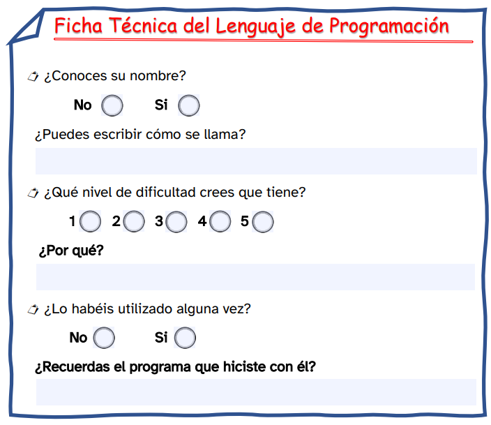

En la imagen inferior, aparecen diferentes lenguajes de programación.
Tenéis que buscar en vuestra memoria aquellos que recordéis y arrastrarlos al recuadro indicado con la flecha azul.
Cuando terminéis, recordad pulsar el botón de Revisar para comprobar el resultado obtenido.
¿Cuántos lenguajes de programación habéis recordado?
Estoy seguro que trabajando en grupo habréis recordado más lenguajes de programación.
Ahora, entre todos debéis diseñar y rellenar una ficha técnica de cada uno de ellos. Para realizar vuestro trabajo podéis elegir el formato que más os guste.
Por ejemplo:
- En el cuaderno, siempre es una buena opción.
- Utilizando un documento rellenable. Si tu grupo va mal de tiempo, esta opción es más rápida.
- Haciendo un diseño personal mediante el uso del ordenador de clase. Esta opción es la más interesante.
En la siguiente imagen podéis ver un ejemplo de ficha de trabajo. Si hacéis clic sobre la imagen podéis acceder a la opción rellenable.
¡Seguro que haréis un excelente trabajo!

Haz clic aquí para descargar la Ficha Técnica del Lenguaje de Programación.
 Comenzamos una nueva aventura.
Comenzamos una nueva aventura.